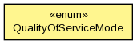

org.hornetq.jms.bridge
Enum QualityOfServiceMode
java.lang.Object
 java.lang.Enum<QualityOfServiceMode>
org.hornetq.jms.bridge.QualityOfServiceMode
java.lang.Enum<QualityOfServiceMode>
org.hornetq.jms.bridge.QualityOfServiceMode
- All Implemented Interfaces:
- Serializable, Comparable<QualityOfServiceMode>
public enum QualityOfServiceMode
- extends Enum<QualityOfServiceMode>

Quality of server (QoS) levels
QOS_AT_MOST_ONCE
With this QoS mode messages will reach the destination from the source at
most once. The messages are consumed from the source and acknowledged before
sending to the destination. Therefore there is a possibility that if failure
occurs between removing them from the source and them arriving at the
destination they could be lost. Hence delivery will occur at most once. This
mode is avilable for both persistent and non persistent messages.
QOS_DUPLICATES_OK
With this QoS mode, the messages are consumed from the source and then
acknowledged after they have been successfully sent to the destination.
Therefore there is a possibility that if failure occurs after sending to the
destination but before acknowledging them, they could be sent again when the
system recovers. I.e. the destination might receive duplicates after a
failure. This mode is available for both persistent and non persistent
messages.
QOS_ONCE_AND_ONLY_ONCE
This QoS mode ensures messages will reach the destination from the source
once and only once. (Sometimes this mode is known as "exactly once"). If both
the source and the destination are on the same HornetQ server
instance then this can be achieved by sending and acknowledging the messages
in the same local transaction. If the source and destination are on different
servers this is achieved by enlisting the sending and consuming sessions in a
JTA transaction. The JTA transaction is controlled by JBoss Transactions JTA
implementation which is a fully recovering transaction manager, thus
providing a very high degree of durability. If JTA is required then both
supplied connection factories need to be XAConnectionFactory implementations.
This mode is only available for persistent messages. This is likely to be the
slowest mode since it requires extra persistence for the transaction logging.
Note: For a specific application it may possible to provide once and only
once semantics without using the QOS_ONCE_AND_ONLY_ONCE QoS level. This can
be done by using the QOS_DUPLICATES_OK mode and then checking for duplicates
at the destination and discarding them. Some JMS servers provide automatic
duplicate message detection functionality, or this may be possible to
implement on the application level by maintaining a cache of received message
ids on disk and comparing received messages to them. The cache would only be
valid for a certain period of time so this approach is not as watertight as
using QOS_ONCE_AND_ONLY_ONCE but may be a good choice depending on your
specific application.
- Author:
- Jeff Mesnil
AT_MOST_ONCE
public static final QualityOfServiceMode AT_MOST_ONCE
DUPLICATES_OK
public static final QualityOfServiceMode DUPLICATES_OK
ONCE_AND_ONLY_ONCE
public static final QualityOfServiceMode ONCE_AND_ONLY_ONCE
values
public static QualityOfServiceMode[] values()
- Returns an array containing the constants of this enum type, in
the order they are declared. This method may be used to iterate
over the constants as follows:
for (QualityOfServiceMode c : QualityOfServiceMode.values())
System.out.println(c);
- Returns:
- an array containing the constants of this enum type, in
the order they are declared
valueOf
public static QualityOfServiceMode valueOf(String name)
- Returns the enum constant of this type with the specified name.
The string must match exactly an identifier used to declare an
enum constant in this type. (Extraneous whitespace characters are
not permitted.)
- Parameters:
name - the name of the enum constant to be returned.
- Returns:
- the enum constant with the specified name
- Throws:
IllegalArgumentException - if this enum type has no constant
with the specified name
NullPointerException - if the argument is null
intValue
public int intValue()
valueOf
public static QualityOfServiceMode valueOf(int value)
Copyright © 2013 JBoss, a division of Red Hat. All Rights Reserved.